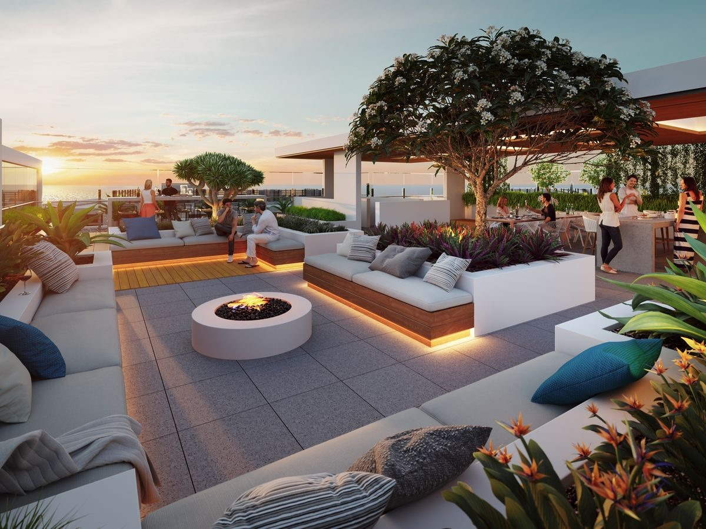

|  |
| ☼ The Eiffel Tower hasseveral options for quality dining throughout the day, whether seated at a table or on the go according to the desires and budget of our visitors and customers. ☼ There are two restaurants at the Eiffel Tower, for which bookings can be made separately to a visit of the Tower :-
☼ For visitors looking to eat on the go, delicious buffets offer sweet and savory snacks and drinks on the esplanade and on the first ☼ This mouth-watering offer is complemented by the Pierre Hermé macaron bar on the second floor and the champagne bar at the top. ☼ There is everything you need for an unforgettable experience while enjoying the view of Paris !!! |